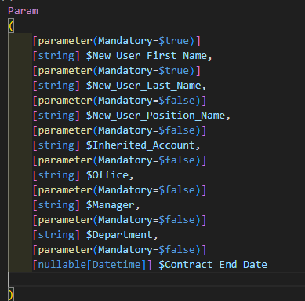
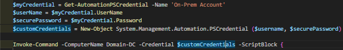
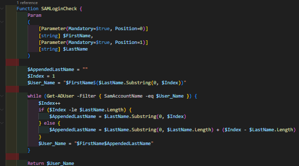
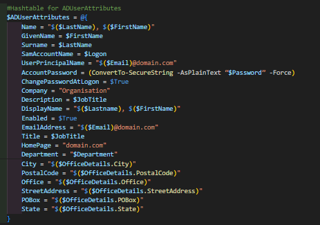
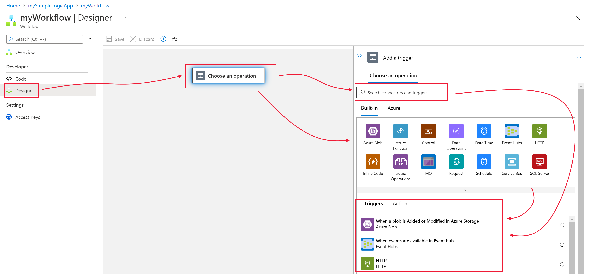

I've previously been hired to conduct some work for an MSP (Managed Service Provider). One of the biggest delays within the MSP day-to-day operations was user account creation. Currently, the method in which they created and built accounts was far too slow and inconvenient. For context, the client in this case had a hybrid Windows environment in which accounts were created on-premises in Active Directory and then manually imported via Exchange on-prem to Office365 via remote move migration.
After asking around at the MSP, I found that the Azure space was underutilized and that scripting wasn't a common practice amongst the sysadmins (Batch files and basic PS1 scripts were used and deployed via GPO but nothing else). So I started to optimize; I created some classic Azure Automation.
Obviously, to get started you will need a pre-existing subscription configured onto the tenancy. After navigating to Azure, you should be able to directly select or search Resource Groups and then select "CREATE". Pick a region that matches where the tenancy operations are being hosted, and pick a suitable resource group name. You will then ensure that the resource group is under the correct subscription plan. Following that, you will be prompted to create tags but that is irrelevant at this point in time.
Creating the automation account is also quite simple, with the process involving you directly navigating to the "Create a resource" section again in Azure, and directly searching "Automation," selecting the group, and entering the automation account name, connecting it to the correct resource group (that was previously created) + Subscription and ensuring that the region also remains consistent. You will then be prompted to select a System assigned or User assigned managed identity. You can initially proceed without the creation of a managed identity. However, if you would like to securely grant permissions to the automation worker to authenticate to any Office 365/Azure functionality (outside of the resource group), then you will need to create one (I will go into more detail about this further down in this article).
Following the full configuration of the automation worker, we will still need to set up the physical hybrid worker group that will allow you to execute commands on-premises and in the cloud simultaneously. In this example, I configured an automation worker via Azure Arc-enabled servers. This was quite a straightforward process which can be directly followed HERE. After following the steps and confirming that the server exists as an entity within the Azure tenancy, we can create the hybrid automation worker directly.
To ensure that the automation worker is granted sufficient access across multiple services, an Azure Managed Identity needs to be configured. This managed identity comes in two forms:
The entire process of delegating permissions to your managed identity can vary depending on organizational demand. If you require assistance or a sufficient baseline, I would recommend this RESOURCE (Step 3 Onwards).
To ensure an account is created properly, a total of two runbooks will need to be made: a primary runbook, which will communicate with your on-premises Active Directory, Exchange, and Azure AD Connect server. Below is a simple user creation runbook broken up to show you an example of all the key functionalities.
To correctly input the new user's data into the runbook, a specific set of parameters will be required. Dependent on the organization, these variables will need to be adjusted. Please find an example of the formatting required below. 
Depending on the credential configuration in your tenancy, you might be required to authenticate directly onto the local DC. This can be done via Invoke-Command and importing the required service account's credentials.

This is a simple function that generates a SAM account login name. Please note that this can be adjusted depending on the organization's needs. For example Sam Smith, is a new user for our imaginary organisation, they will be allocated username Sams. Hypothetically if there was another user who already had the username "Sams" the function would recognise this and the username would change to "Samsm".

The required credentials will need to be imported and then piped to the New-ADUser cmdlet.

The New-ADUser cmdlet is used to create the account by using the values from $ADUserAttributes. Due to formatting issues with Country Code, it is better to set it afterward. Manager is also set afterward in order to allow the runbook to handle a NULL manager value.
New-ADUser @ADUserAttributes;
Set-ADUser $Logon -Replace @{c="US";co="United States";countrycode=840};
if($Manager){Set-ADUser $Logon -Manager $Manager}
$UserGroups = Get-ADUser –Identity $Inherit -Properties memberof | Select-Object -ExpandProperty memberof
$UserGroups | Add-ADGroupMember -Members $Logon -verbose
These are the commands that use the on-premises Exchange server to execute the Enable-RemoteMailbox cmdlet, which attempts to create an Office365 mailbox that is linked to the on-premises account.
Invoke-Command -ComputerName ExchangeServerName -Credential $customCredentials -ScriptBlock {
$Session = New-PSSession -ConfigurationName Microsoft.Exchange -ConnectionUri http://ExchangeServerName/powershell/ -Authentication Kerberos -Credential $Using:customCredentials
Import-PSSession $Session -DisableNameChecking | Out-Null
Enable-RemoteMailbox $($Using:Logon) -RemoteRoutingAddress "$($Using:User_Email)@domain.com" | Out-Null
Remove-PSSession $Session | Out-Null
}
Optional cmdlet only used to try and force an ADSync to ensure that the Office365 account is synced quickly.
Invoke-Command -ComputerName AzureADConnect -Credential $customCredentials -ScriptBlock {
Start-ADSyncSyncCycle -PolicyType Delta | Out-Null
}
Custom function that is used to run a second runbook. Setting Azure Automation variables are an easier way of having the variables globally passed through to a second runbook.
The Start-AzAutomationRunbook cmdlet enables this. Using the -Wait parameter, the current runbook won't continue until the secondary runbook has completed. While the Set-AzAutomationVariable allows for the modification of an existing variable under the automation worker. This variable is global and can be accessed by any runbook under the automation account. Thus it is useful.
Function AzConnect {
(Connect-AzAccount -Identity).context;
Select-AzSubscription 'YOUR_TENANCY_ID' | Out-Null
Set-AzAutomationVariable -AutomationAccountName "AutomationAccountName" -Name "Email" -ResourceGroupName "ResourceGroupName" -Value "$($user_email)@domain.com" -Encrypted $False | Out-Null
Set-AzAutomationVariable -AutomationAccountName "AutomationAccountName" -Name "UserName" -ResourceGroupName "ResourceGroupName" -Value "$Logon" -Encrypted $False | Out-Null
Start-AzAutomationRunbook -Name 'AzureUserModificationRunbook' -AutomationAccountName 'AutomationAccountName' -ResourceGroupName 'ResourceGroupName' -Wait | Out-Null
}
Having modular runbooks within Azure has multiple benefits. It promotes organization, allows you to execute code simultaneously, and allows you to pipe out specific outputs to different runbooks (which can later be grabbed by Logic App).
The below code extract showcases the benefit of a secondary runbook.
$UserEmail = Get-AutomationVariable -Name 'Email'
(Connect-AzAccount -Identity).context;
Select-AzSubscription 'YOUR_TENANCY_ID'
# Do-Until loop to check for the existence of the new user account on Azure.
Do {
$ErrorActionPreference = 'SilentlyContinue'
$UserExistence = Get-AzAdUser -Mail "$EmailAddress"
Start-Sleep -Seconds 15
} Until ($UserExistence)
# Once user existence is confirmed, they are added to an Azure Security Group
Add-AzADGroupMember -TargetGroupObjectId 'AZURE_GROUP_ID' -MemberObjectId $UserExistence.id
At this stage, you should be more than comfortable creating a Microsoft Form. The form should only be shared by any staff member who is authorized to declare a new user (e.g., HR / Hiring Manager). The form itself should be populated with fields that sufficiently populate your 'Required Parameters' section in your runbook.
Please click HERE to navigate to Microsoft Forms (note the account you are accessing it with needs to be licensed). From there, you can directly select "+ New Form" to create the form and then directly add the relevant questions that need to be filled out by the authorized party (Full Name, Team, Office, Manager, etc.).
The final step is the Logic App, which can be created in Azure following the step-by-step guide HERE.
Using the graphical interface below, you will need to search and use the following connectors. 
In conclusion, this post summarizes the core steps needed to construct and automate the creation of new user accounts via Azure Runbooks.
This is primarily achieved by completing the below milestones:
Thank you for reading through this. If you have any questions or if you would like to provide any feedback, please reach out to me on x.com @LiraMirah.